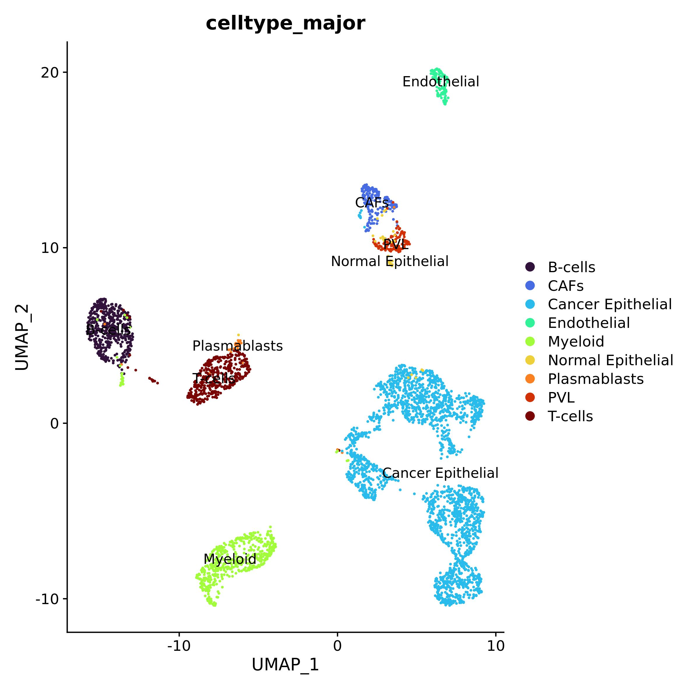
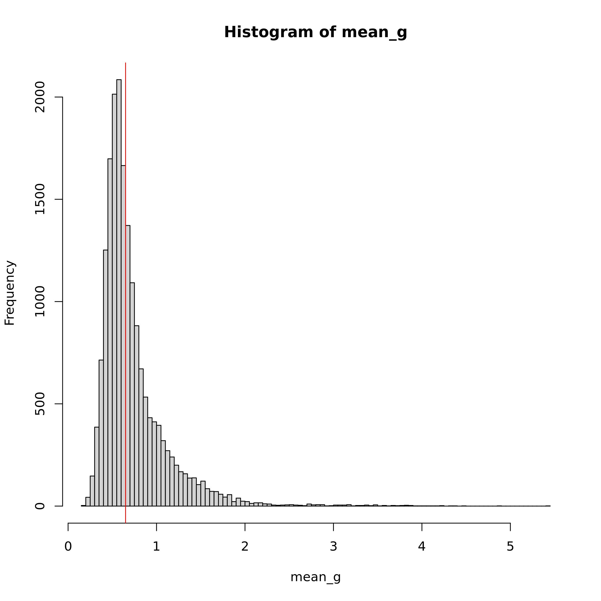
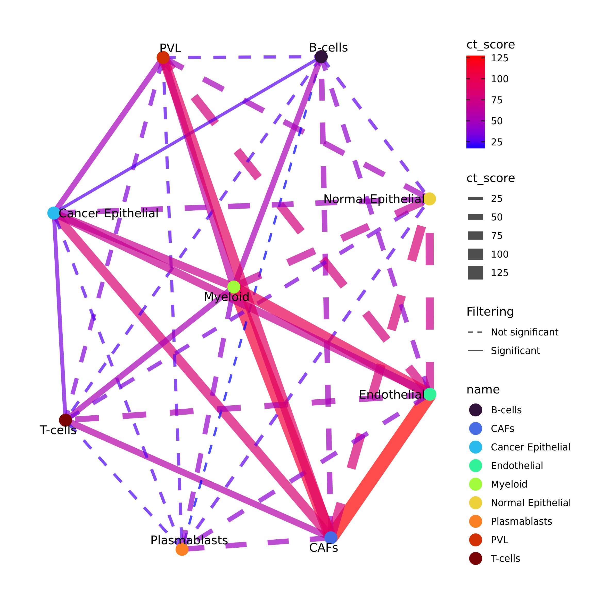
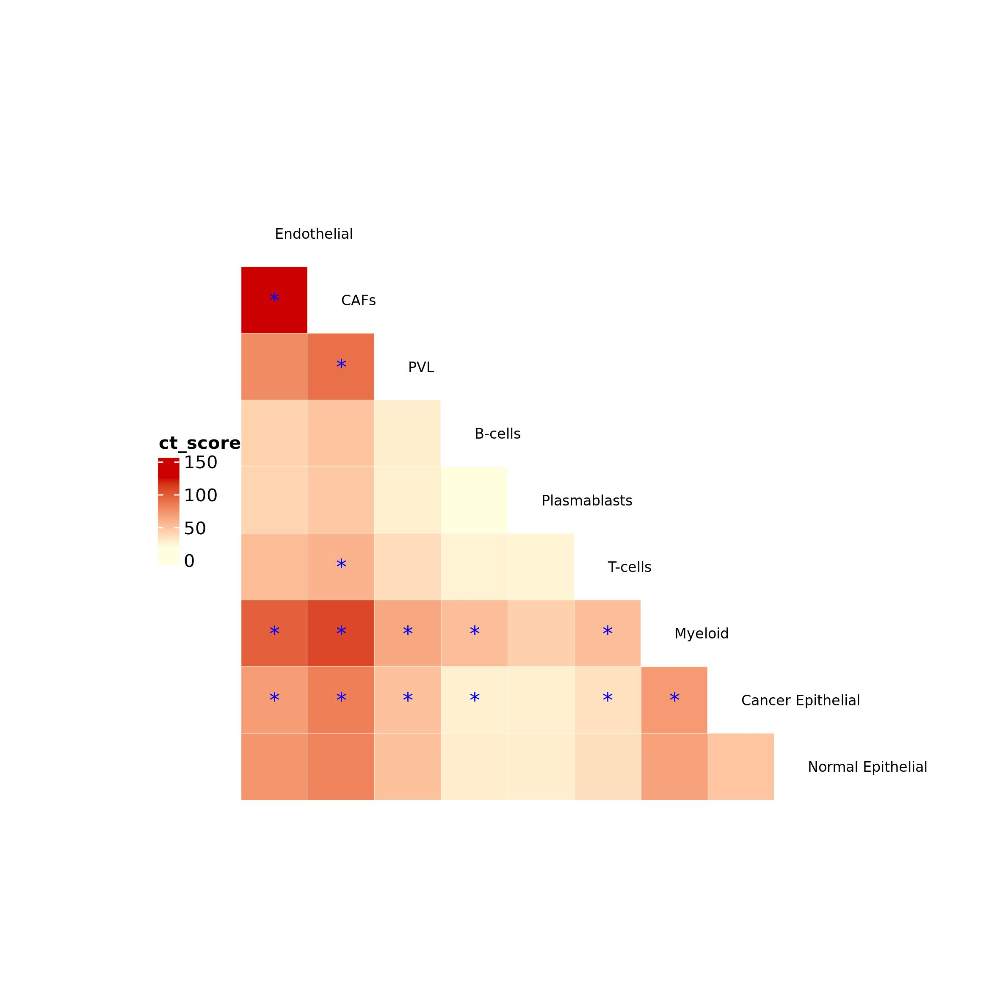
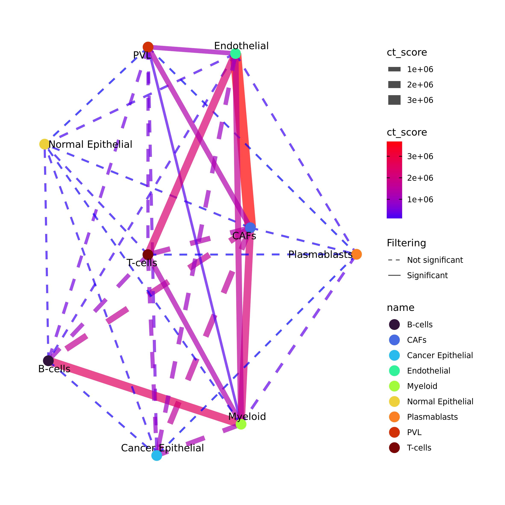
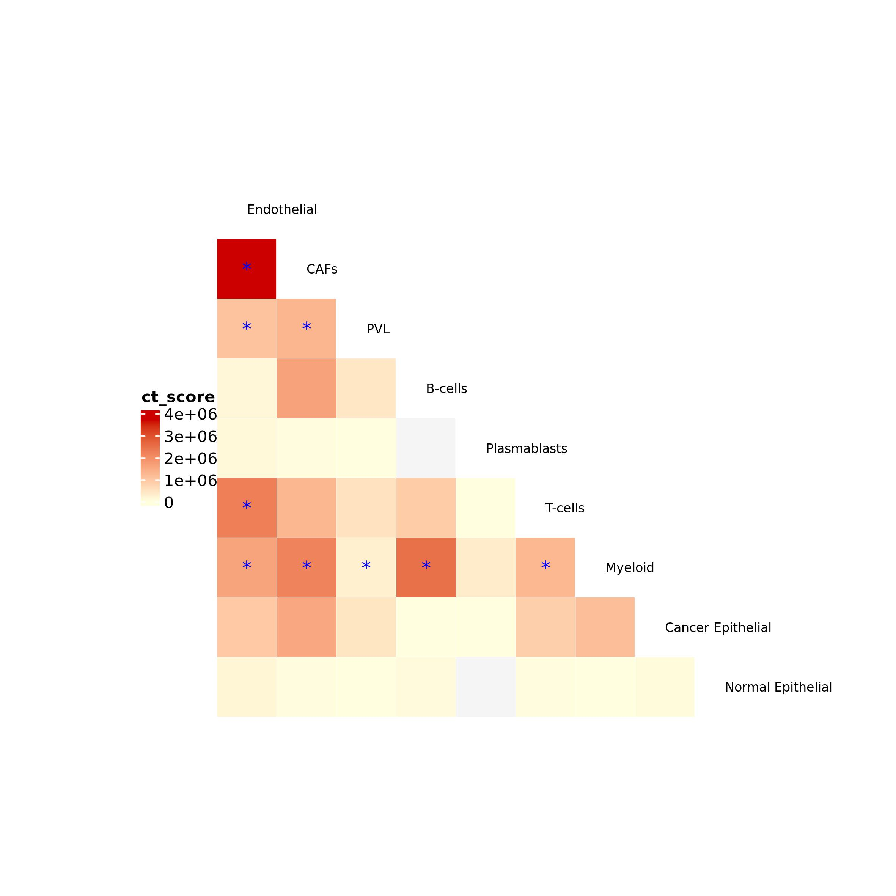
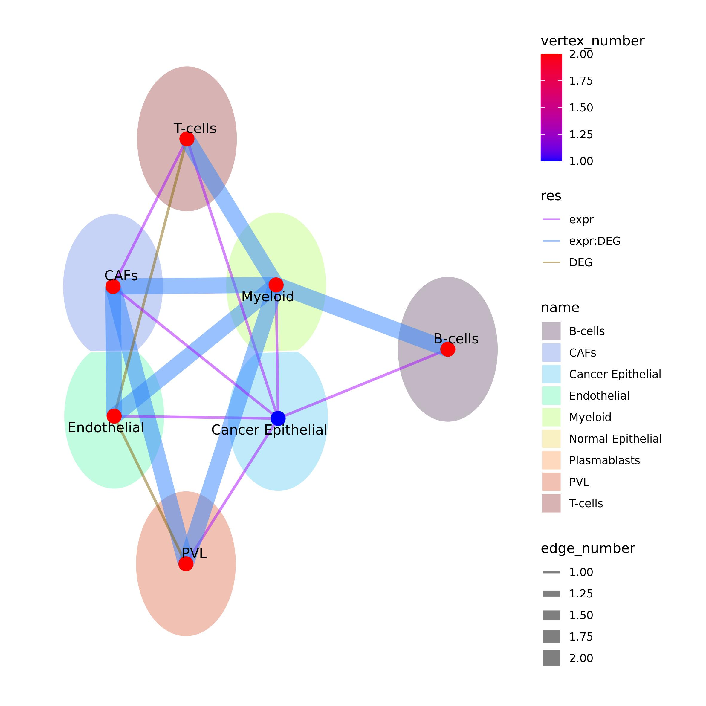

Ulisse workflow 2: Cell-cell cross-talk analysis on single cell data
2023-08-11
Ulisse_sc.RmdIn this tutorial we will see how to analyse intercelluar cross-talk by using Ulisse. For this analysis we need two inputs: ranked gene sets of the cell cluster and a communication network.
library(Seurat)
library(OmnipathR)
library(igraph)
library(Ulisse)
library(circlize)
library(ComplexHeatmap)
library(scales)Preparation of the inputs
Firstly we will see how to prepare the inputs by using Ulisse’s functions. The cell gene sets derive from the cell type or cell clusters of a single cell sample (or multiple integrated samples), while the intercellular network has to be provided.Here, we will use Omnipath communication network (Türei et al. 2021), but other resources can be used. Only take care that Ulisse uses undirected biological network and does not considers sub-units.
Ligand-receptor network
With the code below we will download Omnipath intercellualr
communications, that are used to build an intercellualr network by using
igraph package functions.
intercell_net <- import_intercell_network(interactions_param = list("datasets" = "omnipath"),
transmitter_param = list(
categories = c('ligand')),
receiver_param = list(
categories =c('receptor')),
entity_types = "protein")
g.intercell <- unique(intercell_net[,c("source_genesymbol", "target_genesymbol")])
g.intercell <- graph_from_edgelist(as.matrix(g.intercell),
directed = F)Pre-processing with Seurat pipeline
To explain the functioning of the intercellular cross-talk calculation implemented in Ulisse we will use one of the samples sequenced by Wu et al. (Wu et al. 2021). In this study, the authors analyse 26 single cell of breast cancer samples, that are composed by tumoral and normal cells composing its microenvironment. The data can be downloaded at https://singlecell.broadinstitute.org/single_cell/study/SCP1039 or at GEO website under accession GSE176078. In particular, we will study intercellular cross-talk in sample CID4515. The code below can be used to read the 10x data and pre-process them to obtain dimensionality reduction through Seurat v4 package (Hao et al. 2021). We will study the cell-cell communication among the cell-types provided by the authors, but the pipeline can be applied also to the clusters.
data <- ReadMtx(mtx = "CID4515/count_matrix_sparse.mtx",
cells = "CID4515/count_matrix_barcodes.tsv",
features = "CID4515/count_matrix_genes.tsv" )
data <- data[which(rowSums(sign(data)) >= 5),]
data <- CreateSeuratObject(counts = data, min.cells = 0, min.features = 0)
data <- NormalizeData(data)
data <- ScaleData(data)
data <- RunPCA(data)
data <- RunUMAP(data, dims = 1:10)metadata.csv is the file with the cell-types
identification provided by the authors (that can be downloaded again at
https://singlecell.broadinstitute.org/single_cell/study/SCP1039).
After uploading it, we can use this information to plot the UMAP by cell
type.
meta <- read.csv("CID44991/metadata.csv", sep = ",", stringsAsFactors = F)
meta[1:5,]| X | orig.ident | nCount_RNA | nFeature_RNA | percent.mito | subtype | celltype_subset | celltype_minor | celltype_major |
|---|---|---|---|---|---|---|---|---|
| CID44991_AAACGGGTCCGCATAA | CID44991 | 2648 | 1153 | 1.435045 | TNBC | Endothelial ACKR1 | Endothelial ACKR1 | Endothelial |
| CID44991_AACCATGAGCTACCTA | CID44991 | 4554 | 1795 | 9.244620 | TNBC | Endothelial ACKR1 | Endothelial ACKR1 | Endothelial |
| CID44991_CAGATCACAAGGTGTG | CID44991 | 2001 | 1032 | 12.043978 | TNBC | Endothelial ACKR1 | Endothelial ACKR1 | Endothelial |
| CID44991_CATATTCGTGCACTTA | CID44991 | 3293 | 1442 | 9.626480 | TNBC | Endothelial ACKR1 | Endothelial ACKR1 | Endothelial |
| CID44991_CCTTTCTCACAGTCGC | CID44991 | 4452 | 1884 | 4.784367 | TNBC | Endothelial ACKR1 | Endothelial ACKR1 | Endothelial |
data@meta.data <- cbind(data@meta.data, meta[match(rownames(data@meta.data), meta$X),])
data$celltype_major <- factor(data$celltype_major, levels = unique(data$celltype_major))
pal_ct <- viridis::turbo(9)
names(pal_ct) <- sort(unique(data$celltype_major))
DimPlot(data, reduction = "umap", group.by = "celltype_major", label = T, cols = pal_ct)
Intercellular cross-talk analysis
Ulisse provides two methods to study intercellular cross-talk, one that uses expression data and the other that uses Differentially Expressed Genes (DEG) data. We exemplify the usage of both approaches, to then compare the obtained results.
Expression data
In this case, cell-type marker genes to be sued for cell-type gene
sets are obtained from the normalized count matrix.
preparing_cl_list() takes as an inputs:
the normalized gene counts matrix (
mtx);the cell type affiliation of each cell in the count matrix (
clusters);the gene of interest (
universe);two threshold (
mean_tandcell_t) to filter the data and remove noise.
The function uses mean_t to identify expressed genes in
the normalized expression matrix: if the gene in a cell has a value
equal or higher of that threshold is set to 1, 0 otherwise.
Subsequently, the function uses the binarized expression matrix to
calculate for each gene in each cell-type the frequency of being
expressed in at least cell_t cells. Only the genes in
universe are considered, which are the genes present in the
LR network.
We suggest identifying mean_t considering the mean
expression of each gene calculated on non-zero values. Instead,
cell_t can be set considering the filtering used to remove
low expressed genes at the beginning of the Seurat pipeline. The code
below can be used to assess the expression threshold.
mean_norm <- data@assays$RNA@data
mean_norm[which(mean_norm == 0)] <- NA
mean_g <- rowMeans(mean_norm, na.rm = T)
summary(mean_g)#> Min. 1st Qu. Median Mean 3rd Qu. Max.
#> 0.1906 0.5091 0.6242 0.7346 0.8295 5.4092
Considering the summary of mean_g and the histogram
above, we decide to use 0.65 as mean_t (the red line in the
histogram). We decided this value as it lays past the high frequency
values in the distribution and thus allows to filter out the low and the
most common values, maintaining only the high ones. As cell threshold we
will use the same threshold used for the pre-processing.
universe <- V(g.intercell)$name
ct_list <- preparing_expr_list(mtx = data@assays$RNA@data,
clusters = data$celltype_major,
mean_t = 0.65,
cell_t = 5,
universe = universe)
head(ct_list[[1]])#> TNFRSF4 TNFRSF14 ENO1 AGTRAP TNFRSF1B EPHA2
#> 0.2377049 0.2049180 0.7704918 0.1885246 0.2459016 0.1147541Communication analysis
The required inputs are now ready to analyse intercellular cross-talk
with gs_cross_talk() function. This function requires also
additional parameter:
kcorresponds to the number of permutation needed that, together with the original matrix, are used for the calculation of p-value and FDR. In this case we use 49 permutation that, together with the real one, correspond to a total of 50 permuted list for each cell type pair, and thus the minimal p-value that can be observed is 1/50 or 0.02;sharedwhich should be set toTRUEto enable possible overlapping in gene-lists of a cell-type pair. Different cells may express the same genes, moreover when considering clusters, which may represents different states of the same cell-type. These shared genes may represents intracellular communication, but as both cells in a cell-pair express the same genes, is impossible to discern if these are autocrine or paracrine communication. Thus, it is important to consider also these in intercellular cross-talk;hash: logical, used to speed-up calculation when lots of gene-sets are used. Here, we have low cell-type numbers, so we suggest to set it toFALSE;ct_info: logical, if detail of gene-gene interaction in the gene-set should be returned. This might be highly important in cell-cell cross-talk, so we set it toTRUE. By enabling this parameter, the output of the function will be a two-element list, with the fist (ct_info) a table with all the gene communications between the two cell types; and the second (ct_res) a table with the intercellular cross-talk results. Note that the cumulative score of a cell type pair is equal to the sum of all the gene pair scores inct _info.mc_cores_permandmc_cores_ctcontrol the parallelization of the function in intercellular cross-talk calculation and permutation, respectively. Be aware thatmc_cores_permmultipliesmc_cores_ct. Parallelization is useful to reduce the computational time for the calculation but improves the amount of memory needed.
LR.adj <- as_adjacency_matrix(g.intercell, sparse = F)
expr_ccc <- gs_cross_talk(gs_list = cl_list,
gene_network_adj = LR.adj,
k = 49,
shared = T,
ct_info = T,
hash = F,
mc_cores_perm = 1, mc_cores_ct = 1)
expr_ccc$communications_info[1:5,]| gs1 | gs1_gene | gs2 | gs2_gene | score |
|---|---|---|---|---|
| Endothelial | MIF | CAFs | TNFRSF14 | 0.0337512 |
| Endothelial | TNFSF12 | CAFs | TNFRSF8 | 0.0021916 |
| Endothelial | BIRC2 | CAFs | TNFRSF1B | 0.0059174 |
| Endothelial | TNFRSF1A | CAFs | TNFRSF1B | 0.0170948 |
| Endothelial | GRN | CAFs | TNFRSF1B | 0.0175331 |
expr_ccc$cc_communications[1:5,]| gs1 | gs2 | ct_score | ngenes_gs1 | ngenes_gs2 | nlink | p_value_link | FDR_link | p_adj_BH | weight_gs1 | weight_gs2 | genes_gs1 | genes_gs2 |
|---|---|---|---|---|---|---|---|---|---|---|---|---|
| Endothelial | CAFs | 125.23126 | 399 | 443 | 1334 | 0.02 | 0.1266667 | 0.0205714 | 110.13115 | 119.11230 | MIF;TNFSF12;BIRC2;TNFRSF1A;GRN;EFNA1;TP53;NOTCH1;ITGAV;ITGB1;ITGA5;EDN1;FYN;EFNB1;EFNB2;FGF2;MDK;ANGPTL4;STX3;STX4;NID1;LEPR;IL7R;LIFR;IL6ST;IL15RA;PTPN11;IL4R;TYK2;IFNAR2;JAK1;APOD;JAK2;SOCS2;STAT3;TGFB3;TGFB1;IL6;ITGA9;EZR;ICAM1;SLC7A1;SIRPA;LRP5;FZD4;LRP6;MAGED1;LGALS3BP;DLL1;JAG2;DLL4;JAG1;ITGB4;HLA-DRA;HLA-DRB5;HLA-DRB1;HLA-DQA1;HLA-DQB1;HLA-DQA2;HLA-DMB;HLA-DMA;HLA-DPA1;HLA-DPB1;ARF6;CD36;TLR4;MDM2;BTNL9;IL18BP;ABL1;MAPK8;LGALS3;CD74;P2RY6;TEK;ITGA6;DAG1;ITGA1;ITGA2;CD44;ITGA3;ADRB2;LDLR;S100A10;SELP;SELL;SEMA6B;PTPRF;TNC;THBS1;LAMA5;SNCA;LMAN1;ACVR1B;IL1RAP;IL33;CXCL12;INHBB;BMP6;BMP4;CXCL2;CXCL10;CXCL11;PAM;ADA;LAMC1;SPP1;LAMA4;LAMB1;MFGE8;CX3CL1;CALR;PDGFB;TNFSF10;BMP1;SEMA3F;SEMA3G;RARRES1;VEGFC;FLT4;PGF;ADM;ALCAM;GDF15;VCAM1;VWF;LAMB2;PRND;DUSP18;CCL2;CCL14;CCL23;RPSA;LAMA3;PLXNA2;NRP2;NRP1;RYK;PTPRK;FZD6;MCAM;NLK;MET;PTPRG;LGALS9;DHH;DIP2A;TLN1;LTBP3;VCL;CASP8;RIPK1;TNFRSF10B;TNFRSF10D;TNFRSF10A;TNFRSF11B;IL1R1;ROBO1;PLXNA1;ROBO4;APP;ADAM23;PDGFA;PDGFD;SDC3;ACKR1;KDR;SDC2;PLCE1;PRKACA;ACKR3;S1PR1;PTGER4;FGFR1;IL2RG;FLT1;LYVE1;VCAN;FAM3C;SLC6A8;BMPR2;CD47;EPHA2;EPHA4;CXCR4;TGFBR3;COPA;APLP2;NOTCH4;CD81;HLA-C;CTSS;CTSL;CTSF;CD63;LGMN;TNFRSF21;CIRBP;POSTN;NFE2L2;ADAM15;CD55;SOS1;PRKCE;SCN9A;TUBA4A;ITPR1;RAF1;PIK3CA;LPP;TNK2;CASP3;PIK3R1;FLOT1;MAPK14;CDK6;RPS6KA3;PTK2;THY1;SLK;PTPRE;TUBA1A;CDK2;CSK;LAT;PLCG2;PLD2;CD79B;PECAM1;PLCG1;BSG;STK11;PLAUR;CSF2RB;IGF2;FURIN;HRH1;ACVR2A;ACVR1;ACVR2B;BAMBI;S100A4;CMTM8;ARF4;AREG;HBEGF;ANXA1;DCN;ANXA2;S100A9;S100A8;SAA1;PLXND1;PLAU;PCNA;CD99;RARA;LAMP1;NCL;PTPRB;PLXNB2;CCRL2;PILRB;CD200;EPHB4;APLNR;TIE1;FGF12;SPARC;FGF18;RXRA;HMGB1;APOE;CD40;CAPN1;TGS1;MFAP2;YBX1;CHUK;IGF2R;INSR;CALCRL;RAMP3;RAMP2;SCARB1;RSPO3;STAB1;TXLNA;MMRN2;TNFRSF1B;HLA-A;IL15;SERPINF1;NPNT;ANGPTL2;JAM3;LUM;LGALS1;VEGFB;CKAP4;FLRT2;POMC;APLN;IKBKB;NSMAF;HLA-E;HLA-B;CKLF;ACTR2;RARRES2;NRAS;MPZL1;IFNGR1;MAP3K4;KRAS;MAPK3;CSF1;LY96;RHBDL2;TFRC;PIP5K1A;SMAP1;PIP4K2A;PIP5K1C;ACVRL1;MAPK1;TGFBR2;UNC5B;MMP2;PLAT;IL13RA1;STAT6;PLXDC2;TNFRSF12A;PLK3;MCL1;RGS16;PTGS2;ODC1;EIF2AK2;CASP10;CASP6;PLK2;NR3C1;CSNK2B;HSPA1B;TAP1;HSP90AB1;ABCB1;HIPK2;NOS3;RRM2B;CTSD;BIRC3;CASP1;ATM;HSPA8;PTEN;SLC38A2;PRKAB1;LATS2;BDKRB2;VRK1;ULK2;PPM1D;BCL2L1;DNMT1;MMP14;ETV5;KMT2E;PTHLH;ZFP91;VANGL1;AVPR2;MCFD2;CD46;GPRC5B;TNFRSF14;LTBR;GPIHBP1;CDH11;CDH5;PTAFR;PRMT5;PTPN1;PRKD2;IFNAR1;ARPC5;TAP2;PDIA3;SCARF1;GAS6;FSTL1;CD109;LSR;ITGA10;GMFB;ICAM2;ICAM3 | TNFRSF14;TNFRSF8;TNFRSF1B;EPHA2;MFAP2;PLA2G2A;ECE1;EPHB2;SDC3;COL16A1;TXLNA;YBX1;PTPRF;PLK3;JAK1;LEPR;NEGR1;TGFBR3;F3;VCAM1;CSF1;WNT2B;NRAS;NGF;VANGL1;NOTCH2;ECM1;MCL1;CTSS;PIP5K1A;S100A9;S100A4;IL6R;ADAM15;MUC1;COPA;MPZL1;ANGPTL1;RGS16;LAMC1;ARPC5;PRG4;PTGS2;PLA2G4A;CD55;CD46;CD34;PLXNA2;WNT9A;NID1;LGALS8;ODC1;SDC1;EIF2AK2;SOS1;PRKCE;MCFD2;ACTR2;IL1R1;IL1RL1;CXCR4;ACVR2A;ACVR1;DPP4;NFE2L2;ITGAV;CASP8;BMPR2;NRP2;TUBA4A;NCL;ACKR3;COL6A3;RAMP1;CHL1;ITPR1;HRH1;RAF1;KAT2B;TGFBR2;ITGA9;RPSA;CCR1;LAMB2;DAG1;SEMA3B;PRKCD;WNT5A;LRIG1;CNTN3;ALCAM;CD47;BOC;FSTL1;ITGB5;PLXNA1;PODXL2;ACKR4;RARRES1;TNFSF10;PIK3CA;BCL6;LPP;IL1RAP;APOD;TNK2;FGFRL1;SPON2;SLIT2;LGI2;PDGFRA;CXCL8;CXCL6;CXCL1;CXCL3;CXCL2;CXCL9;CXCL10;CXCL11;CXCL13;SPP1;CASP6;FGF2;IL15;EDNRA;PDGFC;VEGFC;CASP3;TLR3;SEMA5A;LIFR;PTGER4;FGF10;ITGA1;ITGA2;FST;IL6ST;PLK2;PIK3R1;THBS4;VCAN;EDIL3;RGMB;EFNA5;HSPA4;CXCL14;HBEGF;FGF1;NR3C1;PDGFRB;CD74;SPARC;SLIT3;RIPK1;HLA-A;FLOT1;HLA-C;CSNK2B;HSPA1B;NOTCH4;HLA-DRA;HLA-DRB5;HLA-DRB1;HLA-DQA1;HLA-DQB1;TAP2;TAP1;HLA-DMA;HLA-DPA1;HLA-DPB1;MAPK14;PI16;TREM1;PTK7;VEGFA;HSP90AB1;SMAP1;CD109;FYN;LAMA4;RSPO3;PTPRK;LAMA2;MAP3K5;IFNGR1;EZR;IGF2R;MAP3K4;THBS2;DLL1;PDGFA;ITGB8;IL6;INHBA;EGFR;CD36;SEMA3C;HGF;SEMA3D;CDK6;PILRB;KMT2E;LAMB1;WNT2;FAM3C;PLXNA4;PTN;HIPK2;RARRES2;CD99;MXRA5;RPS6KA3;AR;EFNB1;IL13RA1;APLN;GPC4;CD99L2;PLXNA3;ANGPT2;BMP1;TNFRSF10B;SCARA5;FGFR1;PLAT;IKBKB;TGS1;NSMAF;LY96;IL7;SDC2;RRM2B;ANGPT1;TNFRSF11B;PTK2;JAK2;IL33;IL11RA;CCL19;TLN1;GNAQ;NTRK2;CTSL;TGFBR1;TNC;ANGPTL2;ABL1;RXRA;NOTCH1;CTSD;IGF2;CD81;ADM;SPON1;SAA1;LGR4;CD59;CD44;MDK;STX3;VEGFB;CAPN1;CD248;CTSF;CLCF1;GAL;P2RY6;BIRC3;BIRC2;CASP1;ATM;THY1;HSPA8;CHEK1;CDON;APLP2;JAM3;IL15RA;PLXDC2;PIP4K2A;BAMBI;ITGB1;NRP1;FZD8;CXCL12;MAPK8;DKK1;UNC5B;PLAU;VCL;BMPR1A;PTEN;FAS;CHUK;SLK;ADRA2A;PTPRE;TNFRSF1A;LAG3;CLEC2D;KLRD1;LRP6;KRAS;PTHLH;SLC38A2;VDR;TUBA1A;ACVRL1;ACVR1B;ITGA5;CD63;GDF11;STAT6;LRP1;MDM2;LUM;DCN;SOCS2;IGF1;CMKLR1;PTPN11;PRKAB1;SCARB1;ULK1;LATS2;SLC7A1;HMGB1;EDNRB;EFNB2;TNFSF13B;LAMP1;ANG;MMP14;PRMT5;ARF6;BMP4;GMFB;LGALS3;PGF;TGFB3;FLRT2;LGMN;BDKRB2;VRK1;HSP90AA1;GREM1;THBS1;PDIA3;FGF7;ANXA2;SEMA7A;CSK;MFGE8;SEMA4B;FURIN;RGMA;IGF1R;TNFRSF12A;VASN;IL4R;MAPK3;STX4;MMP2;CX3CL1;CDH11;CKLF;PLCG2;SERPINF1;PLD2;TNFSF12;CD68;TP53;ULK2;LGALS9;UNC119;CCL2;CCL7;CCL11;CCL8;CCL5;CCL4;ERBB2;RARA;STAT3;CCR10;RAMP2;GRN;MAP3K14;PPM1D;MRC2;PRKCA;LGALS3BP;C1QTNF1;COLEC12;LAMA1;LMAN1;SIRPA;PCNA;JAG1;SRC;PLCG1;PI3;MMP9;PTPN1;AURKA;BSG;STK11;PIP5K1C;CD70;TNFSF14;INSR;ANGPTL4;DNMT1;ICAM1;TYK2;LDLR;CALR;PRKACA;ADGRE5;NOTCH3;GDF15;COMP;FXYD1;MIA;AXL;TGFB1;PLAUR;APOE;PRKD2;CLEC11A;IL11;MAPK1;MIF;CHEK2;LIF;LGALS1;EP300;FBLN1;APP;IFNAR2;IFNAR1;ITGB2;DIP2A |
| Endothelial | PVL | 77.68139 | 368 | 331 | 1056 | 0.02 | 0.2866667 | 0.0205714 | 101.29508 | 78.27642 | MIF;EDN1;ITGB1;STX3;STX4;EFNB2;NOTCH1;NID1;FYN;GFRA1;TP53;LEPR;IL7R;LIFR;IL6ST;IL15RA;PTPN11;IL4R;TYK2;IFNAR2;TGFB3;TGFB1;IL6;ITGA9;EZR;ICAM1;SLC7A1;SIRPA;MAGED1;LGALS3BP;DLL1;MDK;JAG2;DLL4;JAG1;ITGB4;HLA-DRA;HLA-DRB5;HLA-DRB1;HLA-DQA1;HLA-DQB1;HLA-DQA2;HLA-DMB;HLA-DMA;HLA-DPA1;HLA-DPB1;ARF6;MDM2;JAK1;BTNL9;JAK2;IL18BP;STAT3;EPHA2;EPHA4;ABL1;MAPK8;LGALS3;CD74;P2RY6;SEMA3G;TEK;ITGA6;ITGAV;DAG1;ITGA1;ITGA2;CD44;ITGA3;ADRB2;LDLR;PTPRF;LMAN1;ACVR1B;IL1RAP;INHBB;BMP6;BMP4;VCAM1;SPP1;VCAN;CXCL12;VWF;THBS1;LAMC1;FGF2;LAMA4;LAMB1;TNC;MFGE8;CX3CL1;CALR;PDGFB;ADM;BMP1;SEMA3F;RARRES1;VEGFC;FLT4;PGF;GDF15;LAMB2;PRND;DUSP18;RPSA;LAMA3;LAMA5;MET;NRP1;LGALS9;DIP2A;TLN1;LTBP3;VCL;SELL;NRP2;CASP8;RIPK1;TNFRSF10B;TNFRSF10D;TNFRSF10A;TNFRSF11B;IL1R1;IL33;ITGA5;ACKR1;TLR4;S1PR1;PTGER4;PLXNA2;PLXNA1;FAM3C;SLC6A8;KDR;SELP;TGFBR3;FGFR1;IL17RA;PDGFA;PDGFD;COPA;ROBO1;ROBO4;TNFSF10;TNFRSF1A;APLP2;NOTCH4;CD81;CTSS;CTSL;CTSF;CD63;LGMN;POSTN;NFE2L2;FLT1;SDC3;ADAM15;CD55;SOS1;PRKCE;SCN9A;TUBA4A;ITPR1;RAF1;PIK3CA;LPP;TNK2;CASP3;PIK3R1;FLOT1;MAPK14;CD36;CDK6;RPS6KA3;PTK2;MCAM;THY1;SLK;PTPRE;TUBA1A;CDK2;CSK;LAT;PLCG2;PLD2;CD79B;PECAM1;PLCG1;BSG;STK11;PRKACA;PLAUR;CSF2RB;APP;IGF2;CD47;FURIN;HRH1;ACVR2A;ACVR1;ACVR2B;BAMBI;S100A9;S100A8;SAA1;SDC2;PLAU;PCNA;CD99;RARA;LAMP1;NCL;PTPRB;PLXNB2;CCRL2;PILRB;CD200;EPHB4;TIE1;BMPR2;FGF12;SPARC;FGF18;ANXA2;RXRA;HMGB1;ANGPTL4;APOE;POMC;PTHLH;CAPN1;TGS1;MFAP2;YBX1;CHUK;HLA-C;CALCRL;ACKR3;RAMP3;RAMP2;SCARB1;STAB1;HBEGF;APLN;MMRN2;TNFRSF1B;HLA-A;IL15;NPNT;ANGPTL2;JAM3;LUM;LGALS1;ALCAM;VEGFB;CXCR4;FLRT2;CXCL2;CXCL10;CXCL11;ANXA1;CCL23;IKBKB;NSMAF;GRN;RSPO3;CKLF;ACTR2;DCN;S100A4;INSR;NRAS;MPZL1;IFNGR1;MAP3K4;KRAS;MAPK3;LY96;TFRC;CD40;CCL2;PIP5K1A;SMAP1;PIP4K2A;PIP5K1C;PTPRK;TGFBR2;ACVRL1;LRP5;MMP2;PLAT;EFEMP2;SOCS2;TNFSF12;IL2RG;IL13RA1;STAT6;SNCA;TXLNA;LRP6;PLXDC2;TNFRSF12A;PLK3;MCL1;RGS16;PTGS2;ODC1;EIF2AK2;CASP10;CASP6;PLK2;NR3C1;CSNK2B;HSPA1B;TAP1;HSP90AB1;ABCB1;HIPK2;NOS3;RRM2B;CTSD;BIRC3;CASP1;ATM;HSPA8;PTEN;SLC38A2;PRKAB1;LATS2;BDKRB2;VRK1;ULK2;PPM1D;BCL2L1;DNMT1;MMP14;ETV5;AREG;EFNB1;KMT2E;LGALS8;VANGL1;AVPR2;MCFD2;CD46;BCAM;GPIHBP1;CDH11;CDH5;ARPC5;INPP5D;KITLG;NPTN;PTPN1;TAP2;PDIA3;SCARF1;ADAM23;PAM;GAS6;FSTL1;CD109;LSR;ITGA10;GMFB;TNFRSF14;EFNA1 | TNFRSF14;ECE1;COL16A1;TXLNA;RHBDL2;YBX1;PTPRF;ARTN;PLK3;JAK1;TGFBR3;F3;VCAM1;CSF1;NRAS;NGF;VANGL1;NOTCH2;ECM1;MCL1;CTSS;PIP5K1A;S100A4;IL6R;EFNA1;MUC1;COPA;FCGR2A;MPZL1;ANGPTL1;RGS16;LAMC1;ARPC5;CD55;CD46;LAMB3;NID1;LGALS8;ODC1;EIF2AK2;SOS1;MCFD2;ACTR2;IL1R1;ACVR2A;ACVR1;NFE2L2;ITGA4;ITGAV;CALCRL;BMPR2;NRP2;TUBA4A;NCL;COL6A3;RAMP1;ITPR1;RAF1;TGFBR2;RPSA;LAMB2;DAG1;LRIG1;ALCAM;CD47;FSTL1;ITGB5;PLXNA1;PODXL2;RARRES1;TNFSF10;PIK3CA;BCL6;LPP;IL1RAP;SPON2;CXCL3;CXCL2;CXCL9;CXCL10;SPP1;NPNT;CASP6;EDNRA;CASP3;SEMA5A;LIFR;ITGA1;IL6ST;PLK2;PIK3R1;VCAN;EDIL3;RGMB;HSPA4;HBEGF;FGF1;NR3C1;IL17B;PDGFRB;CD74;SPARC;SLIT3;RIPK1;HLA-A;FLOT1;HLA-C;CSNK2B;HSPA1B;HLA-DRA;HLA-DQA1;HLA-DQB1;TAP2;TAP1;HLA-DPA1;HLA-DPB1;MAPK14;PTK7;VEGFA;HSP90AB1;SMAP1;CD109;FYN;LAMA4;PTPRK;MAP3K5;IFNGR1;ESR1;EZR;IGF2R;MAP3K4;THBS2;PDGFA;IL6;INHBA;CD36;HGF;CDK6;PILRB;KMT2E;LAMB1;FAM3C;PTN;HIPK2;RARRES2;CD99;MXRA5;RPS6KA3;AR;EFNB1;IL13RA1;CD99L2;ANGPT2;BMP1;FGFR1;PLAT;IKBKB;TGS1;LY96;SDC2;RRM2B;ANGPT1;TNFRSF11B;PTK2;GPR20;VLDLR;JAK2;CCL19;TLN1;GNAQ;NTRK2;CTSL;TGFBR1;TNC;ANGPTL2;ABL1;RXRA;NOTCH1;CTSD;CD81;ADM;SAA1;CD59;CD44;MDK;APLNR;CAPN1;CD248;CTSF;TRPC6;BIRC3;BIRC2;CASP1;ATM;MCAM;THY1;HSPA8;APLP2;JAM3;IL15RA;ITGA8;PIP4K2A;BAMBI;ITGB1;NRP1;CXCL12;MAPK8;UNC5B;PLAU;VCL;BMPR1A;PTEN;FAS;CHUK;SLK;ADRA2A;PTPRE;TNFRSF1A;LRP6;KRAS;SLC38A2;TUBA1A;ACVRL1;ACVR1B;ITGA5;ITGA7;CD63;GDF11;STAT6;LRP1;AVPR1A;MDM2;LUM;DCN;SOCS2;PTPN11;ULK1;LATS2;HMGB1;EDNRB;TNFSF13B;LAMP1;MMP14;PRMT5;ARF6;LGALS3;PGF;TGFB3;LGMN;VRK1;HSP90AA1;THBS1;PDIA3;SEMA6D;FGF7;ANXA2;CSK;LINGO1;MFGE8;SEMA4B;FURIN;RGMA;IGF1R;TNFRSF12A;VASN;IL4R;MAPK3;STX4;MMP2;CDH11;CKLF;SERPINF1;TNFSF12;TP53;ULK2;LGALS9;CCL2;CCL8;ERBB2;RARA;STAT3;CCR10;GRN;ITGA3;PPM1D;MRC2;BIRC5;LGALS3BP;C1QTNF1;LAMA3;LMAN1;BCL2;PCNA;JAG1;BCL2L1;MMP9;PTPN1;LAMA5;BSG;STK11;INSR;ANGPTL4;DNMT1;ICAM1;LDLR;EPOR;CALR;PRKACA;ADGRE5;NOTCH3;LGI4;FXYD1;LSR;AXL;TGFB1;PLAUR;BCAM;APOE;CLEC11A;MAPK1;MIF;DUSP18;LGALS1;EP300;FBLN1;APP;IFNAR2;IFNAR1;DIP2A;EPHA3;SEMA5B |
| Endothelial | B-cells | 41.40780 | 364 | 323 | 1024 | 0.02 | 0.2940000 | 0.0205714 | 101.59016 | 41.86842 | MIF;BIRC2;TNFRSF1A;GRN;ITGAV;ITGB1;ITGA5;EDN1;TP53;TYK2;STX3;STX4;FYN;NOTCH1;NID1;LEPR;IL7R;LIFR;IL6ST;IL15RA;PTPN11;IL4R;IFNAR2;SPP1;PDGFB;HLA-C;HLA-DRA;HLA-DRB1;DLL1;MDK;JAG2;DLL4;JAG1;HLA-DRB5;HLA-DQA1;HLA-DQB1;HLA-DQA2;HLA-DMB;HLA-DMA;HLA-DPA1;HLA-DPB1;ARF6;CD36;TLR4;MDM2;EPHA2;EPHA4;FLT4;EFNB2;CD74;P2RY6;INPP5D;CD34;VCAN;ITGA6;DAG1;ITGA1;ITGA2;CD44;ITGA3;ITGB4;ADRB2;LDLR;LGALS9;LGALS1;IL10RB;RAMP3;RAMP2;SNCA;LMAN1;ACVR1B;CXCL12;TGFB1;FGF12;LAMC1;LAMB2;LAMA4;LAMB1;THBS1;LAMA3;LAMA5;DUSP18;VCAM1;VWF;FGF2;TNC;MFGE8;CX3CL1;CALR;TNFSF10;BMP6;BMP1;BMP4;SEMA3F;SEMA3G;RARRES1;VEGFC;PGF;LRP5;LRP6;TBXA2R;TGFB3;GDF15;PRND;CCL2;CCL14;CCL23;CYTL1;NRP1;DIP2A;NRP2;CASP8;RIPK1;TNFRSF10B;TNFRSF10D;TNFRSF10A;TNFRSF11B;IL1R1;IL33;PECAM1;ACKR1;S1PR1;ITGA9;PTGER4;IL2RG;JAK1;PIK3R1;IL7;IL6;JAK2;STAT3;KDR;TEK;ARPC5;POMC;ACTR2;ADM;VEGFB;HSPA8;PTHLH;COPA;FGFR1;APLP2;RGS2;TM4SF1;C6orf15;CDK2;PLCG1;NOTCH4;CD81;TNFRSF14;TNFRSF1B;LTBR;CSF1;SEMA4C;NFE2L2;TNFRSF21;CHUK;TBK1;HMOX1;CD40;BAG6;CTSS;CTSL;CTSF;CD63;LGMN;FLT1;SIRPA;SDC3;PTPRF;ADAM15;CD55;PLXNA2;SOS1;PRKCE;SCN9A;TUBA4A;ITPR1;RAF1;PIK3CA;LPP;TNK2;CASP3;FLOT1;MAPK14;CDK6;RPS6KA3;PTK2;ABL1;MCAM;THY1;SLK;PTPRE;TUBA1A;CSK;LAT;PLCG2;PLD2;CD79B;BSG;STK11;PRKACA;PLAUR;CSF2RB;APP;LGALS3;ICAM1;IGF2;HRH1;PCNA;CD99;BTN3A2;RARA;LAMP1;EFNA1;EFNB1;PILRB;IL15;CXCL10;CXCL11;TIE1;SPARC;FGF18;RXRA;HMGB1;TLN1;CAPN1;MFAP2;YBX1;FURIN;SCARB1;STAB1;HBEGF;NCL;SDC2;PTPRB;TXLNA;VCL;HLA-A;INHBB;NPNT;ANGPTL2;JAM3;LUM;LGALS3BP;LYN;STAT6;INSR;BCR;IFNAR1;FAM3C;S100A8;MYL9;ACVR2A;BMPR2;ACVR2B;S100A4;MET;IGF2R;NRAS;MPZL1;IFNGR1;MAP3K4;KRAS;MAPK3;LY96;RHBDL2;EPHB4;TFRC;PLXNB2;PIP5K1A;SMAP1;PIP4K2A;PIP5K1C;MAPK1;PTPRK;ANXA2;CD47;MMP2;PLAT;ROBO4;PDGFA;DCN;SOCS2;TNFSF12;IL13RA1;ICAM2;ICAM3;PLXDC2;TNFRSF12A;S100A9;PLK3;MCL1;RGS16;PTGS2;ODC1;EIF2AK2;CASP10;CASP6;PLK2;NR3C1;CSNK2B;HSPA1B;TAP1;HSP90AB1;ABCB1;HIPK2;NOS3;RRM2B;CTSD;BIRC3;CASP1;ATM;PTEN;SLC38A2;PRKAB1;LATS2;BDKRB2;VRK1;ULK2;PPM1D;BCL2L1;DNMT1;CCRL2;SLC7A1;KMT2E;ZFP91;VANGL1;MCFD2;AREG;BCAM;GPRC5B;GPIHBP1;CDH11;CDH5;EZR;PTAFR;PRMT5;PTPN1;PRKD2;APOE;KITLG;NPTN;TAP2;PDIA3;SCARF1;MICA;ULBP2;TGFBR3;CXCR4;TGFBR2;FSTL1;CD109;ACVRL1;PLAU;LSR;HLA-B;HLA-F;GMFB;ACKR3;RPSA;MAPK8;CSF3 | TNFRSF14;TNFRSF1B;PLA2G2A;ECE1;RPS6KA1;PTAFR;TXLNA;LCK;YBX1;PTPRF;PLK3;JAK1;S1PR1;CD53;NRAS;NOTCH2;MCL1;CTSS;PIP5K1A;S100A9;S100A4;EFNA4;FCRL1;COPA;SLAMF1;FCGR2B;MPZL1;SELL;RGS16;LAMC1;ARPC5;PTPRC;IL24;CD55;CR2;CD46;LAMB3;LGALS8;ODC1;POMC;EIF2AK2;SOS1;PRKCE;MCFD2;ACTR2;CXCR4;SCN3A;ITGA6;NFE2L2;ITGA4;ITGAV;CASP10;CASP8;BMPR2;NRP2;WNT10A;TUBA4A;NCL;ITPR1;GHRL;RAF1;KAT2B;TGFBR2;RPSA;CCR1;CCR2;DAG1;PRKCD;ALCAM;CD47;FSTL1;RARRES1;TNFSF10;PIK3CA;BCL6;LPP;IL1RAP;TNK2;SPON2;CD38;TLR1;TLR6;CXCL3;CXCL10;SPP1;IL15;CASP3;IL7R;PTGER4;IL6ST;PLK2;PIK3R1;RGMB;HSPA4;HBEGF;NR3C1;ADRB2;CD74;SPARC;RIPK1;HLA-A;FLOT1;DDR1;HLA-C;LTA;TNF;LTB;NCR3;CSNK2B;HSPA1B;NOTCH4;HLA-DRA;HLA-DRB5;HLA-DRB1;HLA-DQA1;HLA-DQB1;HLA-DQA2;HLA-DOB;TAP2;TAP1;HLA-DMB;HLA-DMA;HLA-DOA;HLA-DPA1;HLA-DPB1;MAPK14;VEGFA;HSP90AB1;SMAP1;FYN;LAMA4;PTPRK;MAP3K5;IFNGR1;EZR;IGF2R;MAP3K4;CCR6;LFNG;IL6;ABCB1;CDK6;AZGP1;PILRB;PILRA;KMT2E;PIK3CG;LAMB1;FAM3C;HIPK2;EPHB6;CDK5;CD99;RPS6KA3;IL2RG;CXCR3;IL13RA1;PLXNA3;ANGPT2;TNFRSF10B;TNFRSF10A;PTK2B;FGFR1;IKBKB;TGS1;NSMAF;LY96;IL7;RRM2B;TNFRSF11B;PTK2;JAK2;TLN1;CTSL;SYK;TGFBR1;NOTCH1;CTSD;CD81;SPON1;SAA1;CD59;CD44;MDK;PTPRJ;STX3;MS4A1;VEGFB;CAPN1;CLCF1;BIRC3;BIRC2;CASP1;ATM;IL10RA;HSPA8;APLP2;JAM3;IL15RA;IL2RA;PIP4K2A;BAMBI;ITGB1;MAPK8;VCL;PTEN;FAS;CHUK;SLK;PTPRE;PTPN6;CLEC2D;CD69;KRAS;SLC38A2;TUBA1A;ITGB7;CD63;GDF11;STAT6;MDM2;LUM;DCN;IGF1;PTPN11;PRKAB1;ULK1;FGF9;SLC7A1;HMGB1;EFNB2;TNFSF13B;LAMP1;ANG;PRMT5;RIPK3;ARF6;GMFB;LGALS3;LGMN;VRK1;HSP90AA1;THBS1;PDIA3;ANXA2;SEMA7A;CSK;IL16;MFGE8;SEMA4B;FURIN;IGF1R;TNFRSF12A;IL4R;CD19;LAT;MAPK3;ITGAL;STX4;CKLF;PLCG2;SERPINF1;TNFSF12;CD68;TP53;LGALS9;UNC119;CCL5;CCL4;RARA;STAT3;GRN;MAP3K14;PPM1D;CD79B;PECAM1;BIRC5;LGALS3BP;LMAN1;BCL2;PCNA;HCK;PI3;MMP9;PTPN1;LAMA5;BSG;STK11;CD70;FCER2;ANGPTL4;DNMT1;ICAM1;TYK2;LDLR;EPOR;CALR;PRKACA;ADGRE5;JAK3;LSR;HCST;MIA;TGFB1;CD79A;PLAUR;APOE;PRKD2;DBP;CD37;SIGLEC10;LILRB1;MAPK1;MIF;DUSP18;CSF2RB;LGALS1;EP300;APP;IFNAR2;IFNAR1;ITGB2;DIP2A |
| Endothelial | Plasmablasts | 40.09062 | 162 | 123 | 346 | 0.02 | 0.8230303 | 0.0205714 | 52.92623 | 44.75000 | MIF;NOTCH1;TP53;LEPR;IL7R;LIFR;IL6ST;IL15RA;PTPN11;IL4R;TYK2;IFNAR2;HLA-C;HLA-DRA;HLA-DRB1;HLA-DRB5;HLA-DQA1;HLA-DQB1;HLA-DQA2;HLA-DMB;HLA-DMA;HLA-DPA1;HLA-DPB1;MDM2;JAK1;BTNL9;IL6;JAK2;IL18BP;STAT3;CD74;P2RY6;CD34;VCAN;ADRB2;LDLR;FYN;LGALS9;LGALS1;JAG1;FGF2;TNC;MDK;THBS1;LAMA5;ANGPTL4;LMAN1;ACVR1B;CXCL12;TGFB1;LAMC1;LAMB2;LAMA4;LAMB1;LAMA3;DUSP18;VCAM1;SPP1;VWF;TNFSF10;TNFRSF1A;LRP5;LRP6;PRND;NRP1;NRP2;CASP8;RIPK1;TNFRSF10B;TNFRSF10D;TNFRSF10A;TNFRSF11B;PECAM1;S1PR1;ITGAV;ITGA9;PTGER4;CD44;ITGB1;ITGA5;KDR;TEK;TLR4;ARPC5;POMC;ACTR2;ADM;VEGFB;HSPA8;PTHLH;COPA;APLP2;NOTCH4;CD81;CTSS;CTSL;CTSF;CD63;LGMN;CALR;ICAM1;PCNA;RARA;LAMP1;PILRB;IL15;IL7;RXRA;HMGB1;PTK2;CAPN1;ITGB4;CD99;CD36;SCARB1;STAB1;HBEGF;HLA-A;NID1;NPNT;VEGFC;FLT4;TLN1;ANGPTL2;JAM3;LUM;TGFB3;LGALS3BP;FAM3C;S100A4;IGF2R;INSR;LY96;PIP5K1A;SMAP1;PIP4K2A;PIP5K1C;PTPRK;MCAM;ANXA2;PLAT;ROBO4;LGALS3;CASP3;TNFSF12;TNFRSF1B;EFNB2;CSK;MCFD2;GPRC5B;TAP2;TAP1;PDIA3;SCARF1;ITGA3;CD55;SDC2;LSR;APP;TNFRSF14;CXCR4;ACKR3 | TNFRSF14;YBX1;PLK3;JAK1;CD53;NRAS;MCL1;CTSS;S100A4;IL6R;COPA;MPZL1;SELL;ARPC5;PTPRC;CD55;CD46;ODC1;SDC1;EIF2AK2;SOS1;MCFD2;ACTR2;CXCR4;ITGA6;NFE2L2;ITGA4;CASP10;CASP8;WNT10A;TUBA4A;NCL;RPSA;ALCAM;CD47;RARRES1;TNFSF10;CD38;SPP1;CASP3;IL6ST;PIK3R1;HSPA4;NR3C1;ADRB2;CD74;HLA-A;FLOT1;HLA-C;CSNK2B;HSPA1B;HLA-DRA;HLA-DRB5;HLA-DRB1;HLA-DQA1;HLA-DQB1;HLA-DQA2;TAP1;HLA-DMA;HLA-DPA1;HLA-DPB1;HSP90AB1;EZR;CDK6;KMT2E;PIK3CG;FAM3C;HIPK2;CD99;IL2RG;TGS1;LY96;TLN1;SYK;CTSD;CD81;SAA1;CD59;CD44;BIRC3;CASP1;ATM;IL10RA;HSPA8;APLP2;IL15RA;ITGB1;CLEC2D;KRAS;SLC38A2;CD63;MDM2;IGF1;HMGB1;ARF6;LGALS3;HSP90AA1;PDIA3;ANXA2;IL16;MFGE8;TNFRSF12A;CKLF;PLCG2;STAT3;GRN;CD79B;PECAM1;LMAN1;BCL2L1;PTPN1;BSG;CD70;CALR;ADGRE5;CD79A;APOE;PRKD2;CD37;MIF;LGALS1;IFNAR2;IFNAR1 |
| Endothelial | T-cells | 52.56231 | 375 | 374 | 1146 | 0.02 | 0.2360000 | 0.0205714 | 105.78689 | 49.82816 | MIF;TNFSF12;BIRC2;TNFRSF1A;GRN;ITGAV;ITGB1;ITGA5;EDN1;TP53;FYN;STX3;STX4;NOTCH1;APOE;LEPR;IL7R;LIFR;IL6ST;IL15RA;PTPN11;IL4R;TYK2;IFNAR2;TGFB3;TGFB1;ITGA9;EZR;ICAM1;SPP1;PDGFB;SLC7A1;SIRPA;HLA-C;HLA-DRA;HLA-DRB1;LGALS3BP;CD58;CD59;DLL1;MDK;JAG2;DLL4;JAG1;TNFRSF14;HLA-DRB5;HLA-DQA1;HLA-DQB1;HLA-DQA2;HLA-DMB;HLA-DMA;HLA-DPA1;HLA-DPB1;ARF6;CD36;TLR4;MDM2;JAK1;BTNL9;IL6;JAK2;IL18BP;STAT3;EPHA2;EPHA4;CD74;P2RY6;INPP5D;CD34;VCAN;TNFRSF10B;TNFRSF4;ADRB2;LDLR;LGALS9;LGALS1;ITGA6;DAG1;ITGA2;CD44;ITGA3;ITGB4;FGF2;TNC;THBS1;LAMA5;ANGPTL4;RAMP3;RAMP2;LMAN1;ACVR1B;HLA-F;HLA-A;HLA-E;HLA-B;LAT;CXCL12;CXCL2;CXCL10;CXCL11;PAM;ADA;LAMC1;LAMB2;LAMA4;LAMB1;LAMA3;DUSP18;VCAM1;VWF;NID1;MFGE8;CX3CL1;CALR;TNFSF10;BMP6;BMP1;BMP4;PIK3R1;LRP5;LRP6;EFNA1;EFNB1;EFNB2;ITGA1;ADM;FAM3C;GDF15;PRND;CCL2;CCL14;CCL23;S100A4;MET;NRP1;CD200;NRP2;CASP8;RIPK1;TNFRSF10D;TNFRSF10A;TNFRSF11B;IL1R1;IL33;PECAM1;SDC3;ACKR1;KDR;SDC2;PLCE1;PRKACA;S1PR1;PTGER4;IL2RG;IL7;F2R;F2RL3;TEK;ARPC5;POMC;ACTR2;VEGFB;HSPA8;PTHLH;PDGFA;PDGFD;COPA;FGFR1;APLP2;NOTCH4;CD81;TNFRSF1B;LTBR;CSF1;SEMA4C;NFE2L2;FLT4;TNFRSF21;CHUK;TBK1;HMOX1;CD40;BAG6;CTSS;CTSL;CTSF;CD63;LGMN;FLT1;PGF;PTPRF;ADAM15;CD55;PLXNA2;SOS1;PRKCE;SCN9A;TUBA4A;ITPR1;RAF1;PIK3CA;LPP;TNK2;CASP3;FLOT1;MAPK14;CDK6;RPS6KA3;PTK2;ABL1;MCAM;THY1;SLK;PTPRE;TUBA1A;CDK2;CSK;PLCG2;PLD2;CD79B;PLCG1;BSG;STK11;PLAUR;CSF2RB;APP;IGF2;PCNA;CD99;RARA;LAMP1;SEMA6B;CCRL2;PILRB;EPHB4;IL15;SEMA3F;TIE1;FGF12;SPARC;FGF18;ANXA2;RXRA;HMGB1;CAPN1;TGS1;MFAP2;YBX1;FURIN;SCARB1;STAB1;HBEGF;NCL;PTPRB;TXLNA;ALCAM;TLN1;VCL;CD320;NPNT;VEGFC;ANGPTL2;JAM3;LUM;SELP;F8;IKBKB;NSMAF;SNCA;LGALS3;LYN;STAT6;INSR;BCR;IFNAR1;CLEC2B;S100A8;MYL9;ROBO3;ACVR2A;BMPR2;ACVR2B;PSMB8;PSMB9;IFNGR1;IFNGR2;IGF2R;NRAS;MPZL1;MAP3K4;KRAS;MAPK3;LY96;TFRC;PIP5K1A;SMAP1;PIP4K2A;PIP5K1C;MAPK1;PTPRK;CD47;MMP2;PLAT;ROBO4;IL13RA1;ICAM2;ICAM3;TNFRSF12A;PLK3;MCL1;RGS16;PTGS2;ODC1;EIF2AK2;CASP10;CASP6;PLK2;NR3C1;CSNK2B;HSPA1B;TAP1;HSP90AB1;ABCB1;HIPK2;NOS3;RRM2B;CTSD;BIRC3;CASP1;ATM;PTEN;SLC38A2;PRKAB1;LATS2;BDKRB2;VRK1;ULK2;PPM1D;BCL2L1;DNMT1;ETV5;AREG;KMT2E;ZFP91;VANGL1;MCFD2;CD46;GPRC5B;PTAFR;PRMT5;PTPN1;PRKD2;KITLG;SOCS2;NPTN;TAP2;PDIA3;SCARF1;MICA;ULBP2;TGFBR3;CXCR4;TGFBR2;FSTL1;CD109;ACVRL1;DCN;PLAU;LSR;GMFB;ACKR3;OSMR;RPSA;MAPK8;S100A9 | TNFRSF14;TNFRSF25;TNFRSF1B;PLA2G2A;ECE1;RPS6KA1;FGR;TXLNA;LCK;YBX1;PLK3;LRP8;JAK1;TGFBR3;VCAM1;S1PR1;CSF1;CD53;NRAS;VANGL1;CD2;NOTCH2;CD160;MCL1;CTSS;PIP5K1A;S100A9;S100A8;S100A4;S100A1;IL6R;ADAM15;EFNA4;COPA;SLAMF1;CD247;MPZL1;SELL;FASLG;TNFSF4;RGS16;ARPC5;PTPRC;CD55;CD46;LAMB3;LGALS8;RRM2;ODC1;SDC1;POMC;EIF2AK2;SOS1;MCFD2;ACTR2;CD8A;CD8B;ZAP70;CXCR4;DPP4;ITGA6;NFE2L2;ITGA4;ITGAV;CASP10;CASP8;BMPR2;CD28;CTLA4;ICOS;WNT10A;TUBA4A;EPHA4;NCL;COL6A3;RAMP1;PDCD1;ITPR1;RAF1;KAT2B;TGFBR2;CX3CR1;RPSA;CCR1;CCR5;DAG1;PRKCD;LRIG1;ALCAM;CD47;CD200R1;RARRES1;TNFSF10;PIK3CA;BCL6;LPP;IL1RAP;APOD;TNK2;SPON2;CD38;TLR1;TXK;CXCL8;CXCL1;CXCL2;CXCL10;CXCL13;SPP1;CASP6;IL15;CASP3;IL7R;PTGER4;ITGA1;ITGA2;GZMA;IL6ST;PLK2;PIK3R1;HSPA4;HBEGF;NR3C1;ADRB2;PDGFRB;CD74;SPARC;HAVCR2;ITK;RIPK1;HLA-A;FLOT1;HLA-C;LTA;TNF;LTB;NCR3;CSNK2B;HSPA1B;HLA-DRA;HLA-DRB5;HLA-DRB1;HLA-DQA1;HLA-DQB1;HLA-DQA2;TAP2;TAP1;HLA-DMB;HLA-DMA;HLA-DPA1;HLA-DPB1;MAPK14;VEGFA;HSP90AB1;SMAP1;CD109;FYN;MAP3K5;IFNGR1;EZR;IGF2R;MAP3K4;CCR6;LFNG;ABCB1;CDK6;AZGP1;PILRB;KMT2E;PIK3CG;FAM3C;PLXNA4;HIPK2;EPHB6;RARRES2;CDK5;CD99;RPS6KA3;EFNB1;IL2RG;CXCR3;CD40LG;PLXNA3;ANGPT2;TNFRSF10B;TNFRSF10A;PTK2B;FGFR1;PLAT;IKBKB;TGS1;NSMAF;LY96;RRM2B;TNFRSF11B;JAK2;TLN1;GNAQ;NTRK2;CTSL;SYK;TGFBR1;ABL1;RXRA;NOTCH1;CTSD;CD81;SPON1;SAA1;CD59;CD44;MDK;PTPRJ;STX3;MS4A1;CD6;CD5;VEGFB;CAPN1;CTSF;BIRC3;BIRC2;CASP1;ATM;IL10RA;JAML;CD3E;CD3D;CD3G;HSPA8;CHEK1;APLP2;IL15RA;IL2RA;PRKCQ;PIP4K2A;ITGB1;MAPK8;CDK1;PLAU;VCL;PTEN;FAS;CHUK;SLK;PTPRE;VWF;TNFRSF1A;LAG3;CD4;PTPN6;KLRB1;CLEC2D;CD69;KLRF1;KLRD1;KLRC2;KLRC1;KRAS;NELL2;SLC38A2;VDR;TUBA1A;ITGB7;ITGA5;CD63;GDF11;CDK2;STAT6;IFNG;MDM2;LUM;DCN;SOCS2;IGF1;PTPN11;PRKAB1;FLT1;SLC7A1;HMGB1;TNFSF13B;LAMP1;PRMT5;RIPK3;ARF6;GMFB;LGALS3;LGMN;VRK1;HSP90AA1;THBS1;PDIA3;ANXA2;CSK;IL16;MFGE8;FURIN;TNFRSF12A;IL4R;LAT;SPN;MAPK3;ITGAL;STX4;ITGAM;ITGAX;CKLF;PLCG2;TNFSF12;TP53;LGALS9;UNC119;CCL5;CCL4;ERBB2;RARA;STAT3;GRN;MAP3K14;PPM1D;CD79B;PECAM1;PRKCA;BIRC5;LGALS3BP;LMAN1;BCL2;CD226;PCNA;JAG1;BCL2L1;PLCG1;PI3;MMP9;PTPN1;AURKA;BSG;STK11;CD70;TNFSF14;DNMT1;ICAM1;TYK2;LDLR;EPOR;CALR;PRKACA;ADGRE5;JAK3;LSR;HCST;TGFB1;CD79A;PLAUR;APOE;PRKD2;DBP;CD37;LILRB1;KIR3DL1;KIR3DL2;MAPK1;MIF;LIF;OSM;DUSP18;IL2RB;LGALS1;EP300;APP;IFNAR2;IFNAR1;ITGB2;DIP2A |
Intercellular cross-talk visualization
Intercellular cross-talk results can be filtered to maintain only the
significant ones. The results can be visualized by using Ulisse package
functions. The code below can be used to plot the results as a network.
filtering argument is used to control which intercellular
cross-talks have to be visualized in the network. If set to
TRUE, then p_val, FDR and
ct_val are used to identify the significant communications
and plot these with a solid line, whereas all the others will be plotted
with a dashed line. Here, we enabled this visualization, by providing
p-value and FDR filtering. ct_val = NULL allows to consider
all intercellular cross-talk without filtering for this value.
community can be logical (if the community should be
calculated by using igraph::fastgreedy.community()), or a
community object as calculated with igraph package. vertex
is used to color the vertices, and can be set to "name" to
color them according to the names of the cell-types.
edge_col_by and edge_width parameters control
the value used to color the edges and if their width should be
proportional to that value. edge_adj_col is used to control
the transparency of the edges: as in pathway cross-talk there can be
lots of links it can e useful to control the transparency.
plot_network_CT() function returns the igraph cross-talk
network with the communities under “comm_id” vertex attribute (if
calculated). plot_network_CT() function uses
ggraph package functions, which are ggplot2-based. If
file_out is set to NULL the function returns
also the ggplot2 network object.
expr_ccc_net <- plot_network_CT(ct = expr_ccc$ct_res,
filtering = T, p_val = 0.05, FDR = 0.2, ct_val = NULL,
community = F,
vertex = "name", vertex_size = 5, vertex_label = TRUE, vertex_pal = pal_ct,
edge_col_by = "ct_score", edge_pal=NULL,
edge_width = T, edge_adj_col = 0.7)
expr_ccc_net#> IGRAPH be33f36 UN-- 9 36 --
#> + attr: name (v/c), label (v/c), ct_score (e/n), ngenes_gs1 (e/n),
#> | ngenes_gs2 (e/n), nlink (e/n), p_value_link (e/n), FDR_link (e/n),
#> | p_adj_BH (e/n), weight_gs1 (e/n), weight_gs2 (e/n), genes_gs1 (e/c),
#> | genes_gs2 (e/c), filt (e/c)
#> + edges from be33f36 (vertex names):
#> [1] Endothelial--CAFs Endothelial--PVL
#> [3] Endothelial--B-cells Endothelial--Plasmablasts
#> [5] Endothelial--T-cells Endothelial--Myeloid
#> [7] Endothelial--Cancer Epithelial Endothelial--Normal Epithelial
#> [9] CAFs --PVL CAFs --B-cells
#> + ... omitted several edges
ct_heatmap() function can be used to plot intercellular
cross-talk as an heatmap by selecting the variable that have to be used
to color the heatmap (color_by, here we used the cross-talk
score), color scale (color = c("lightyellow", "red3")), and
the color of cells in the heatmap of the cell types pairs without
communications (no_ct_color).
Similarly to plot_network_CT(),
ct_heatmap() function can select significant interactions,
which are represented with a star. This is achieved by enabling
filtering = TRUE, that will further require p-value, FDR
and/or cross-talk score thresholds.
ct_heatmap(ct = clCC$ct_res,
color_by = "ct_score", color = c("lightyellow", "red3"), no_ct_color = "whitesmoke",
filtering = TRUE, p_val = 0.05, FDR = 0.2, ct_val = NULL,label_size = 8)
DEG data
We will now analyse intercellular cross-talk by using DE results.
Here we will use Seurat function for Differential Expression Analysis with default parameters to calculate DEG for each cell type against the others. Then, we will use Benjamini-Hochberg method to obtain adjusted p-value to be used to filter DEGs to maintain only the significant ones. We will select only the up-regulated genes.
Idents(data) <- data$celltype_major
DEGs_data <- FindAllMarkers(data, assay = "RNA") #this may take a while
DEGs_data$p_val_BH <- p.adjust(DEGs_data$p_val, method = "BH")
DEGs_data[1:5,]| p_val | avg_log2FC | pct.1 | pct.2 | p_val_adj | cluster | gene | p_val_BH | |
|---|---|---|---|---|---|---|---|---|
| ACKR1 | 0 | 4.585262 | 0.615 | 0.011 | 0 | Endothelial | ACKR1 | 0 |
| VWF | 0 | 3.505398 | 0.861 | 0.012 | 0 | Endothelial | VWF | 0 |
| PLVAP | 0 | 3.213029 | 0.820 | 0.013 | 0 | Endothelial | PLVAP | 0 |
| RAMP2 | 0 | 3.016198 | 0.877 | 0.011 | 0 | Endothelial | RAMP2 | 0 |
| ECSCR.1 | 0 | 2.816407 | 0.861 | 0.006 | 0 | Endothelial | ECSCR.1 | 0 |
It is not important which package and algorithm is used for DEG calculation, as Ulisse function is structured to handle any input type.
DEGs data can now be used to build the cell-type lists by using
preparing_DEG_list() function. This function does not take
as an input a table with the results of DEG calculation, but the
specific columns (genes, their log2 Fold Change, p-value and the
cluster), so that it is not important which package and algorithm is
used for the differential analysis. preparing_DEG_list()
uses these inputs to calculate for each gene in
clusters the associated weights, that are the product
between log2FC and the -log10 of p_val. Then,
the function builds a vector for each cluster, each one
composed by the weights, named after the respective genes. Then, these
vectors are filtered to maintain only the gene that are present in
universe and returned as a list
DEGs_data <- DEGs_data[DEGs_data$p_val_BH <= 0.05 & DEGs_data$avg_log2FC >= 0.5,]
DEG_list <- preparing_DEG_list(cluster = DEGs_data$cluster,
p_val = DEGs_data$p_val_BH,
log2FC = DEGs_data$avg_log2FC,
gene = DEGs_data$gene,
universe = rownames(adj.m))
head(DEG_list[[1]])#> ACKR1 VWF RAMP2 RAMP3 CLEC14A ADGRL4
#> 1397.4371 1068.3300 919.2382 839.4853 801.0583 800.9338Communication Analysis
The subsequent part of the analysis is identical to the one used for
expression data: gs_cross_talk() is used to analyse
intercellular cross-talk with the same inputs and parameters. The
calculation will results again in a two-object list with the detail of
the gene-gene interaction and the cross talk results.
DEG_ccc <- gs_cross_talk(gs_list = DEG_list,
gene_network_adj = adj.m,
k = 49, shared = T,
ct_info = T, hash = F,
mc_cores_perm = 1, mc_cores_ct = 1)
DEG_ccc$ct_info[1:5,]| gs1 | gs1_gene | gs2 | gs2_gene | score |
|---|---|---|---|---|
| Endothelial | KDR | CAFs | DCN | 369360.44 |
| Endothelial | ITGB1 | CAFs | LUM | 62407.07 |
| Endothelial | ITGB1 | CAFs | COL6A3 | 44302.73 |
| Endothelial | NOTCH4 | CAFs | THBS2 | 127874.51 |
| Endothelial | ITGB1 | CAFs | THBS2 | 30321.90 |
DEG_ccc$ct_res[1:5,]| gs1 | gs2 | ct_score | ngenes_gs1 | ngenes_gs2 | nlink | p_value_link | FDR_link | p_adj_BH | weight_gs1 | weight_gs2 | genes_gs1 | genes_gs2 |
|---|---|---|---|---|---|---|---|---|---|---|---|---|
| Endothelial | CAFs | 3706408.2 | 59 | 75 | 148 | 0.02 | 0.0200000 | 0.0566667 | 10179.2059 | 18710.881 | KDR;ITGB1;NOTCH4;ITGA6;CD36;INSR;ITGA5;ITGAV;CD200;PTPRB;NRP1;PDGFB;TIE1;BMPR2;FZD4;SPARC;MMRN2;FGFR1;VWF;ROBO4;ROBO1;THBS1;CD81;TGFBR3;CDH5;IL6;SELP;ACVRL1;TGFBR2;ACKR1;TEK;ANGPTL2;CXCL12;ANGPTL4;PGF;CD40;VEGFC;SEMA3G;NID1;LAMB1;LAMA4;VCAM1;LAMC1;LAMA5;IL6ST;LIFR;STAT3;RAMP2;RAMP3;CALCRL;CD99;ADM;TNFRSF10B;GRN;PLXNA2;PLXND1;NRP2;APP;FLT1 | DCN;LUM;COL6A3;THBS2;IGF1;CXCL12;MXRA5;PTN;PDGFRA;ANGPTL2;FST;WNT2;PDGFRB;FGFR1;CD248;FBLN1;FGF7;SPARC;GREM1;SCARA5;NID1;VCAM1;SLIT3;MMP2;CD99;LRP1;INHBA;ANGPTL4;COMP;F3;PLA2G2A;BMP1;VCAN;LGALS3BP;TGFB3;LAMB1;CCL2;LGALS1;CLEC11A;SPON2;ITGA5;CDH11;IGF2;NRP1;TNFSF13B;MDK;NRP2;ITGB1;ITGA1;IL6;IL6ST;ADM;ITGAV;THBS1;PTHLH;LAMC1;LAMA4;TNC;CD81;CXCL11;RAMP1;TNFSF10;TNFRSF1A;SDC2;CXCL2;STAT3;CXCL9;CLCF1;CXCL10;SEMA3C;CXCL6;SPON1;CXCL1;CXCL3;VEGFA |
| Endothelial | PVL | 1055689.1 | 51 | 52 | 107 | 0.02 | 0.0200000 | 0.0566667 | 6838.0833 | 3553.581 | NRP1;PDGFB;CXCL12;LAMB1;LAMC1;TEK;TIE1;ROBO4;ROBO1;ACKR1;FLT1;NRP2;FGFR1;ITGAV;PAM;EDN1;ITGB1;DLL4;DLL1;JAG1;JAG2;CCL23;ITGA5;ACVRL1;TGFBR2;TGFBR3;CDH5;ITGA6;MMRN2;IL6ST;NOTCH4;VWF;VEGFC;NID1;LAMA4;VCAM1;ANGPTL2;LAMA5;THBS1;CD81;KDR;ANGPTL4;APP;PTK2;STAB1;CD36;LIFR;IL6;STAT3;PTPRB;GRN | PDGFRB;AVPR1A;ITGA1;ANGPT2;SLIT3;CCL8;PGF;SPARC;EDIL3;FXYD1;EDNRA;NID1;NOTCH3;ADRA2A;ITGA7;EDNRB;ANGPT1;VCAM1;CCL2;TGFB3;LGALS1;ANGPTL4;LAMA4;CD248;ANGPTL2;IL6;JAG1;COL6A3;ITGB1;ANGPTL1;CD99;LAMC1;CD36;PTK2;SDC2;LGALS3BP;LAMB2;APOE;FGF7;TLN1;CD59;LAMB1;THBS1;IL6ST;STAT3;ITGAV;CXCL12;CLEC11A;TNC;ECE1;TNFRSF1A;BCAM |
| Endothelial | B-cells | 134594.1 | 11 | 9 | 14 | 0.94 | 0.8782609 | 0.9987500 | 1791.6487 | 1769.084 | TNFRSF1A;CD40;CXCL12;CD81;CD63;CD34;EFNB2;TNFSF10;VCAM1;VWF;THBS1 | LTB;CXCR4;HLA-DRA;SELL;FCRL1;CCR6;EZR;HLA-DRB1;ITGA4 |
| Endothelial | Plasmablasts | 112975.8 | 1 | 1 | 1 | 0.92 | 0.9817647 | 0.9987500 | 881.9485 | 128.098 | PECAM1 | CD38 |
| Endothelial | T-cells | 2248603.9 | 40 | 23 | 56 | 0.02 | 0.1311111 | 0.0566667 | 5940.8172 | 4960.810 | F2R;CLEC2B;CD59;ACKR1;PECAM1;KDR;CSF2RB;EPHA4;MCAM;PLXNA2;APP;ITGB1;ADAM15;SLK;TUBA1A;STAT3;FLOT1;PTK2;PTPRE;CD36;CD55;CXCL12;VWF;VCAM1;THBS1;TNFRSF1A;CD40;GRN;CD34;CD81;LIFR;IL6ST;ACVRL1;TGFBR2;FSTL1;TGFBR3;ITGAV;ICAM2;ITGA5;TEK | GZMA;KLRB1;CD2;CCL5;FYN;KLRF1;CXCL13;CXCR4;ITGA4;LTB;TNFRSF1B;ADGRE5;ITGB7;CD38;SELL;CD99;JAK1;TGFB1;ITGB2;TLN1;STAT3;DIP2A;PIK3R1 |
Intercellular cross-talk visualization
As done before, we can build intercellular cross-talk network by filtering the results and using Ulisse function and plot it as a network
DEG_CCC_net <- plot_network_CT(ct = DEGcl_ct$ct_res,
filtering = T, p_val = 0.05, FDR = 0.2, ct_val = NULL,
community = F,
vertex = "name", vertex_size = 5, vertex_label = TRUE, vertex_pal = pal_ct,
edge_col_by = "ct_score", edge_pal=NULL,
edge_width = T, edge_adj_col = 0.7)
DEG_CCC_net#> IGRAPH 22bb420 UN-- 9 34 --
#> + attr: name (v/c), label (v/c), ct_score (e/n), ngenes_gs1 (e/n),
#> | ngenes_gs2 (e/n), nlink (e/n), p_value_link (e/n), FDR_link (e/n),
#> | p_adj_BH (e/n), weight_gs1 (e/n), weight_gs2 (e/n), genes_gs1 (e/c),
#> | genes_gs2 (e/c), filt (e/c)
#> + edges from 22bb420 (vertex names):
#> [1] Endothelial--CAFs Endothelial--PVL
#> [3] Endothelial--B-cells Endothelial--Plasmablasts
#> [5] Endothelial--T-cells Endothelial--Myeloid
#> [7] Endothelial--Cancer Epithelial Endothelial--Normal Epithelial
#> [9] CAFs --PVL CAFs --B-cells
#> + ... omitted several edges
or as an heatmap
ct_heatmap(ct = DEGcl_ct$ct_res,
color_by = "ct_score", color = c("lightyellow", "red3"), no_ct_color = "whitesmoke",
filtering = T, p_val = 0.05, FDR = 0.2, ct_val = NULL, label_size = 8)
Comparison between expression and DEG intercellular cross-talk results
Ulisse provides a function to build and visualize a union network out
of multiple analyses or samples.
comparing_results_network() function takes as an input a
list of results obtained with gs_cross_talk(). The function
does not align the results, so there should be correspondence among the
gene sets names of the different samples, especially when using
clusters. Here we will compare the significant results obtained with
expression and DEG intercellular cross-talk analyses on the same sample,
thus the cell-types corresponds.
comparing_results_network() needs as an input a named list
with the cross-talk results that should be already filtered to maintain
only the significant intercellular cross-talk, if needed. This function
will create a union network where the vertices are all the cell types
present in the results in res_list, the links are the all
the communication present between them in the results. The vertices can
be colored by considering the number of results in which are present
(vertex_number = TRUE) and/or by a discrete variable (in
this case vertex = "name", otherwise a two list, where the
first element is the name of the variable, the second the named vector
with, see function help for detail). If both parameters are enabled, as
in this case, the vertex one is used to color voronoi
tesselation (see ggrpah package for further detail). When
vertex_number = TRUE, a color palette can be provided,
composed by minimum and maximum value colors, or the function will use
as default “blue” to “red”. Edges can be colored by the number of
results that share them (edge_color_by = "number") or, as
in this case, by which results contain them
(edge_color_by = "which"). Edges width can be proportional
to the number of results in which they are present
(edge_width = TRUE).
comparing_results_network() will return the union network
and the plot id file_out argument is not provided.
res_list <- list(expr = expr_ccc$cc_communications,
DEG = DEG_ccc$cc_communications)
res_list <- lapply(res_list, function(x) x <- x[x$p_value_link <= 0.05 & x$FDR_link <= 0.2,])
comp.out <- comparing_results_network(res_list = res_list,
vertex_number = TRUE,
vertex = "name", vertex_pal = pal_ct,
voronoi_radius = 0.3, voronoi_alpha = 0.3,
edge_width = TRUE, edge_color_by = "which",
edge_adj_col = 0.5, vertex_number_adj = 0.8)
comp.out